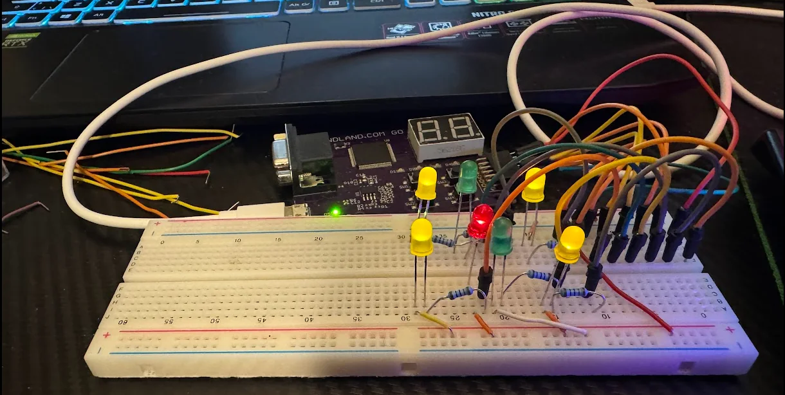
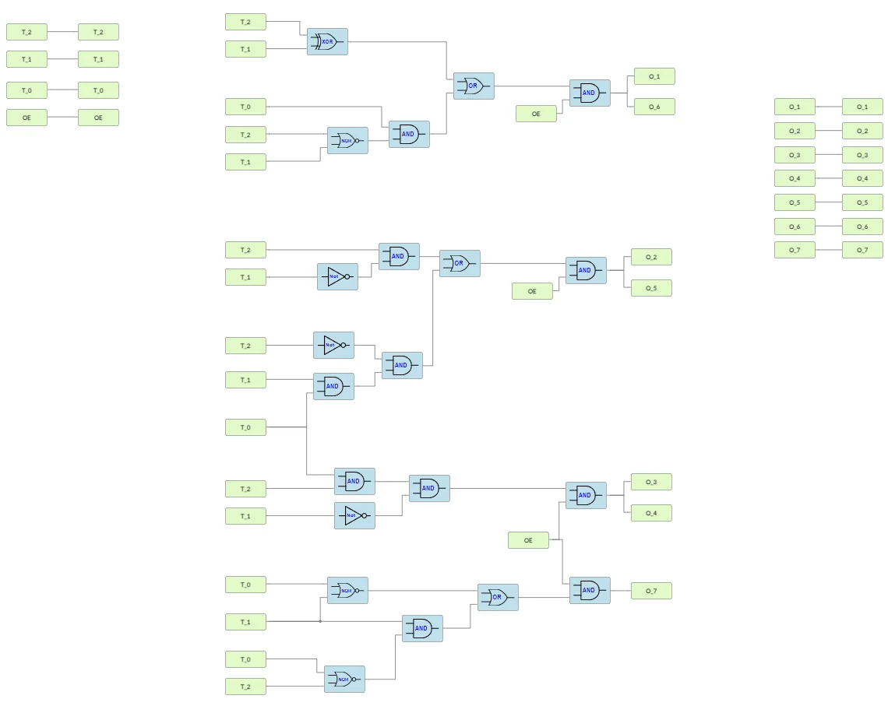

DP3 Electronic die
Digital die showing numbers from 1 to 6, built as digital logic in an FPGA with IceStudio.

How it works
- A counter, two multiplexers, a register and a decoder control which number is shown.
- The result is shown on seven LEDs (four yellow, two green and one red), each with 120 Ω in series from 3.3 V.
- The report includes a power calculation for the LEDs.
Figures

